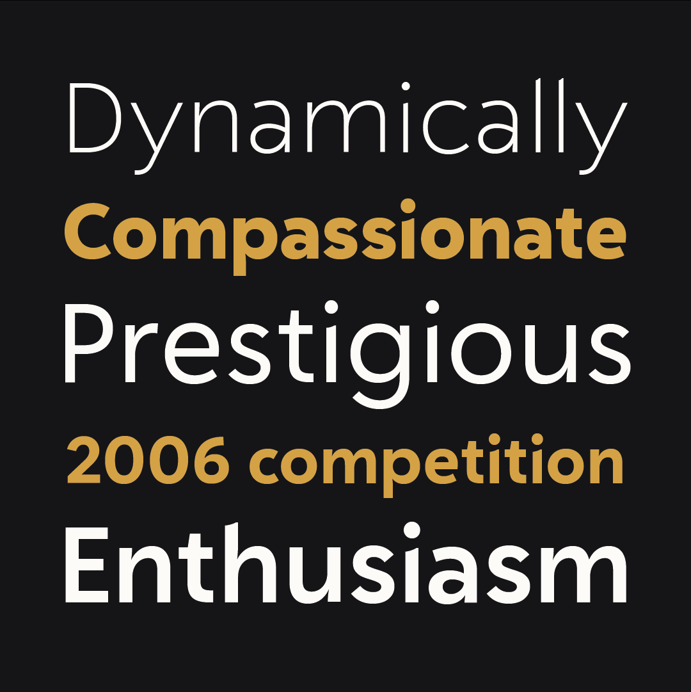

In search of an exclusive typeface for the branding of his website and concert series, Korean star pianist
Sunwook Kim requested a synthesis of the timeless geometric aesthetic
of the never-surpassed Futura and the warmth and charm of human handwriting. The result is a humanist-geometric
hybrid, which borrows equally in construction from the pure geometric forms of circle and square and from the
human flow of the pen. Little details such as the stylised stem caps further distinguish the family from the
principles of pure geometry.
